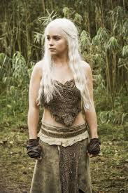
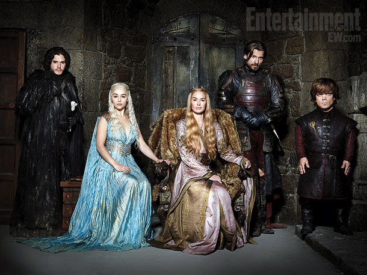

Game of Thrones is an American fantasy drama television series created for HBO by David Benioff and D. B. Weiss. It is an adaptation of A Song of Ice and Fire, George R. R. Martin's series of fantasy novels, the first of which is titled A Game of Thrones. Filmed in a Belfast studio and on location elsewhere in Northern Ireland, Malta, Scotland, Croatia, Iceland and Morocco, it premiered on HBO in the United States on April 17, 2011. The series has been renewed for a fourth season, to air in 2014.[4] The series, set on the fictional continents of Westeros and Essos at the end of a decade-long summer, interweaves several plot lines. The first follows the members of several noble houses in a civil war for the Iron Throne of the Seven Kingdoms; the second covers the rising threat of the impending winter and the mythical creatures of the North; the third chronicles the attempts of the exiled last scion of the realm's deposed dynasty to reclaim the throne. Through its morally ambiguous characters, the series explores the issues of social hierarchy, religion, loyalty, corruption, sexuality, civil war, crime, and punishment. It is the most recent big-budget work to have contributed to the popularity of the fantasy genre in mainstream media.[5] Game of Thrones has obtained an exceptionally broad and active international fan base. It received widespread acclaim by critics, although its use of nudity and violence has caused controversy. The series has won numerous awards and nominations, including a Primetime Emmy Award nomination for Outstanding Drama Series in all three seasons, a Golden Globe Award nomination for Best Television Series – Drama, a Hugo Award for Best Dramatic Presentation in Long Form, and a Peabody Award. Among the ensemble cast, Peter Dinklage won the Primetime Emmy Award for Outstanding Supporting Actor in a Drama Series and the Golden Globe Award for Best Supporting Actor – Series, Miniseries or Television Film for his role as Tyrion Lannister.
The series roughly follows the multiple storylines of the A Song of Ice and Fire series.[6] Set in the fictional Seven Kingdoms of Westeros, Game of Thrones chronicles the violent dynastic struggles among the realm's noble families for control of the Iron Throne. As the series opens, additional threats are beginning to rise in the icy North and in the eastern continent of Essos.[2] The settings, characters and plot elements of the novels and the TV series are derived from a very broad range of periods in European history.[7] A principal inspiration for the novels was the English War of the Roses[8] (1455–85) between the houses of Lancaster and York, reflected in Martin's houses of Lannister and Stark. Most of Westeros, with its castles and knightly tournaments, is based on High Medieval Western Europe. The scheming Cersei, for instance, calls to mind Isabella (1295–1358), the "she-wolf of France".[7] Tom Holland, writing for The Guardian states that the series also combines such varied inspirations as Hadrian's Wall (which became Martin's great Wall), the fall of Rome and the legend of Atlantis (ancient Valyria), Byzantine "Greek fire" ("wildfire"), Icelandic sagas of the Viking Age (the Ironborn) and the Mongol hordes (the Dothraki), as well as elements from the Hundred Years' War (1337–1453) and the Italian Renaissance (c. 1400–1500). The series' great popularity has in part been attributed to Martin's skill at fusing these disparate elements into a seamless whole that appears credible on its own terms as an alternative history.[7] "The Sopranos in Middle-earth" is the tagline showrunner David Benioff jokingly suggested for Game of Thrones, referring to its intrigue-filled plot and dark tone combined with a fantasy setting.[9] In a 2012 study, the series was listed second out of 40 recent US TV drama series by deaths per episode, with an average of 14
